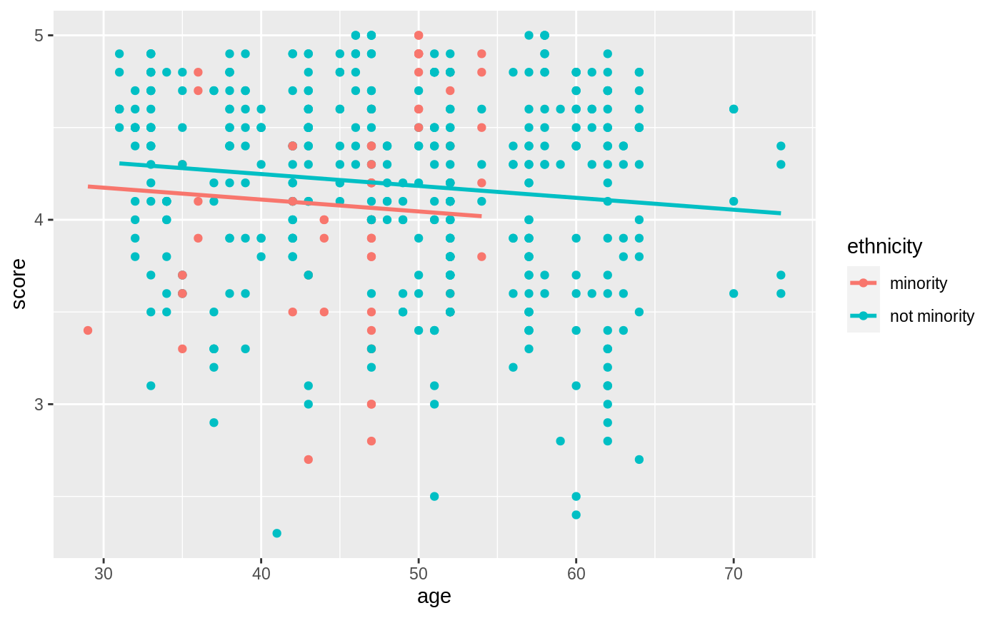

Datasets and wrapper functions for tidyverse-friendly introductory linear regression, used in "Statistical Inference via Data Science: A ModernDive into R and the tidyverse" available at https://moderndive.com/.
library(moderndive)
# Fit regression model:
mpg_model <- lm(mpg ~ hp, data = mtcars)
# Regression tables:
get_regression_table(mpg_model)
#> # A tibble: 2 × 7
#> term estimate std_error statistic p_value lower_ci upper_ci
#> <chr> <dbl> <dbl> <dbl> <dbl> <dbl> <dbl>
#> 1 intercept 30.1 1.63 18.4 0 26.8 33.4
#> 2 hp -0.068 0.01 -6.74 0 -0.089 -0.048
# Information on each point in a regression:
get_regression_points(mpg_model)
#> # A tibble: 32 × 5
#> ID mpg hp mpg_hat residual
#> <int> <dbl> <dbl> <dbl> <dbl>
#> 1 1 21 110 22.6 -1.59
#> 2 2 21 110 22.6 -1.59
#> 3 3 22.8 93 23.8 -0.954
#> 4 4 21.4 110 22.6 -1.19
#> 5 5 18.7 175 18.2 0.541
#> 6 6 18.1 105 22.9 -4.84
#> 7 7 14.3 245 13.4 0.917
#> 8 8 24.4 62 25.9 -1.47
#> 9 9 22.8 95 23.6 -0.817
#> 10 10 19.2 123 21.7 -2.51
#> # ℹ 22 more rows
# Regression summaries
get_regression_summaries(mpg_model)
#> # A tibble: 1 × 9
#> r_squared adj_r_squared mse rmse sigma statistic p_value df nobs
#> <dbl> <dbl> <dbl> <dbl> <dbl> <dbl> <dbl> <dbl> <dbl>
#> 1 0.602 0.589 14.0 3.74 3.86 45.5 0 1 32
# Plotting parallel slopes models
library(ggplot2)
ggplot(evals, aes(x = age, y = score, color = ethnicity)) +
geom_point() +
geom_parallel_slopes(se = FALSE)
